This text is a concatenation of posts on a Diablo 2 related forum, so tense and other oddities are to be had.
I've got my first ever bowazon in Hell. There's a lot of information around about how to build a bowazon and it's been tough to sort of distill that information and stir it into something that I enjoy playing. I'm hoping to write a little bit about my trip and thoughts about different enemies and how to defeat them and any other musings that I care to digress to...
GiantConch - Level 79
East Hardcore Ladder 8
Skills - After gear, but that doesn't matter much...
I blundered during my respec and didn't bring CS back up to where I like it (8), so I'm putting further points there.
I started with an exceptional Lycander's Aim, which is a fine bow, but Buriza proved to look cooler. And looking cooler is what Hardcore is all about.
Sometimes I recast Valkyrie with Spirit or just flip over to my shield when I'm playing badly and need to run away (max block with a 51%CTB shield is weird), as can happen.
Demon Limb is always for the AR boosting Enchant. Just got it, so no comment on if it make any difference.
The Confuse wand is for a very temporary distraction.
I switch charms out for more resists or life, depending on what I know spawns in upcoming areas.
I've got no Knockback anywhere, and that hasn't been an issue.
I had planned to go with 200 dex, but I was getting too much life and wanted more damage output, so 100 base life, strength for equipment and shooting for 300 dexterity. I don't get hit unless I'm doing something stupid or a stray arrow hits, both of which I counter with a Full Rejuve and my patented Running Away Screaming tactic.
Mercenary: Itonya - Fire Rogue
She never dies, slows bosses down to a crawl and contributes Open Wounds and not a lot else. And that's fine. When she casts IS, my CTH just about maxes out and things die in short order.
I've been thinking about spending a socket quest on her Riphook to socket it with a Nef rune, just because she's often shooting at monsters that are nearer to me than the valk and scooting them away wouldn't be such a bad thing. ;)
Twitchthroe is my 'secret weapon' in equipping my new Demon Limb.
I had briefly hired an Act 2 Town Guard with Blessed Aim but he died even with some pretty fancy stuff. So, back to the rogue I went.
I found this one to be pretty easy. The hardest enemies are either Quil Rats, which have an annoying poison hit, or Fallen Shamen.
Speaking of Fallen Shamen, I found it WAY easier to lock them down with Frozen Arrow until they died. Alternatively, shattering the fallen with FA also worked.
Standard Decoy/Strafe scouting dominated most of this act with little need for advanced tactics of any sort.
Treehead Woodfist - I had a minor run-in with this pack. The Tree managed to land right next to the WP this time. Treehead and his pack spawn Extra Strong, Extra Fast natively, and were Cold Immune, so they're hot on your heels before they even know it. It took some Decoy spamming to get them into a comfortable cluster until Multishot could take over and do the rest.
Andarial - The 45% Slows Target from my mercenary just ruins boss fights. I had plenty of time to spawn a new Valkyrie and Decoy and keep the Guided Arrows flying around.
Act 2 was a test of my abilities.
Radament - Frozen Arrow shattered as many skeletons until I could get Decoy and Valkyrie up in his grill. Soon after, Itonya hit him with a sack of slows target and it was a done deal.
This battle sort of set the tone for the majority of battles in this act. Revivers are CI MI, Skeletons FI and Undead are mostly PoI. Battles revolved around beating down undead baddies with Multishot and Frozen Arrow, shattering the bodies, until I could reach the Mummies and end them with Magic Arrow or Guided - both do just fine. I shopped my wand of Confuse for this act, but it wasn't as helpful as I had hopped: the duration is short and only temporarily tricked monsters into wiggling into range of my attacks, which is sometimes all I needed.
Blood Witch the Wild - Spawns: Extra Strong, Cursed. Enough said. Valkyrie died in seconds and I saw one javelin as it arced through the door, flying so effortless, and straight into my Amazon, dealing just about 3/4 life.
It turns out there was a Might pack in there, too, just boosting the joyfullness for everyone. (I didn't need to visit Blood Witch, but I made an effort to pickup the Waypoints and figured that I might as well go try it. Smrat.)
Maggot Lair/Coldworm the Burrower - Itchies, Maggots and Beetles all ate Frozen Arrow for breakfast, lunch, and dinner. Easy.
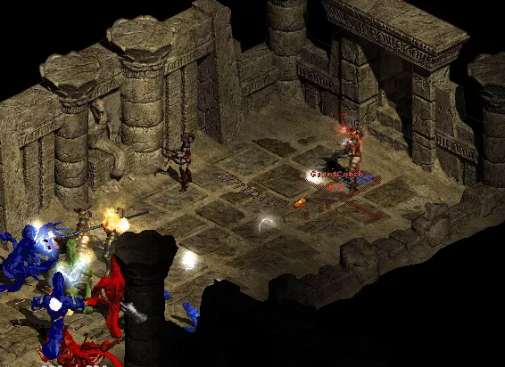
Fangskin - He spawned with a Might friend, but this wasn't a hard battle. They tend to get clumped up and stuck around the edges of the Level 2 area, allowing Valkyrie and Decoy to do their tanking. Still, it's a little dicey when angry snakes are coming at you in two directions... My only S&E so far has been in the Claw Viper Temple: I thought I could charge into a room full of charging snakes, I got charged and it nearly killed her. Don't do that again!
Summoner - Zzz. Didn't even see him. On the flip side, I spent an amazing amount of time in the Arcane Sanctuary, shooting Magic Arrow and Frozen Arrow at Physical Immune ghosts. I don't have a good backup solution to this so it's my fault all the way.
Oh, and by the way. When you don't have a Physical Immune solution, you will find that every boss pack along the way will spawn PI just to screw with you.
Dur-, oh, Act 2 Tombs - Hell. Tough. Tricky. Ick.
I killed ghosts. Lots of ghosts. And revivers brought them back to be killed again...
You will also meet Mummy Sarcophagus which spew out undead. Oh, and revivers can bring those back, too. Enjoy your stay at the Tal-Rasha Hotel: You can check out anytime you like, but you can never leave...
I've been reading lots from Insane Wayne and Jiansonz, so I now that I can stop the Mummy Boxes from going nuts by standing just-so in front of them, which stops them from opening. 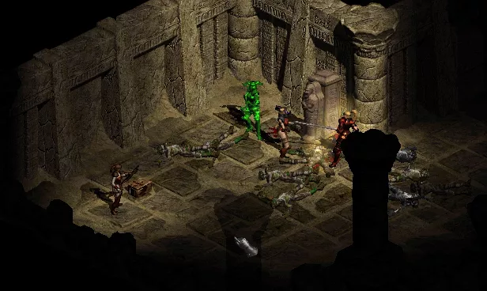 Getting in front of them takes lots of wiggling. Decoy can stop them, too. 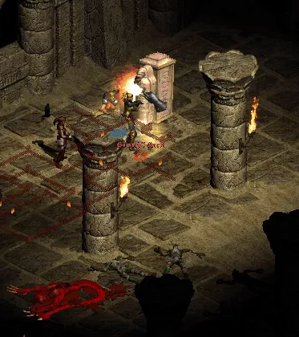
Nobody seems to mention this place as being a trouble spot, so maybe I'm just doing something wrong or rolled a weird and irritating monster spawn.
Duriel - Easy. I didn't even put on my CB gear. Valk, Guided Arrow, Slows Target and Buriza chewed through him just fine.
Act 2 was brutal.
I know that Act 3 has a lot of ghost spawning possibilities so I might build a specialty bow for them. AS has them listed has having 0% FR and 0% LR, so a 6x Ort bow of some sort might be the ticket. I don't have the luck of owning WWS or Atma's Scarab. And I'm not going to use Reaper's Toll.I might run into gloams! Going to put some life charms away for some more LR/FR ones to hit 75% and maybe boost the others up a tad before then.
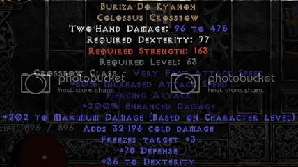
Did someone say Blizzard Cannon?
The only remotely challenging spots were fighting Undead Stygian Dolls. I figured out that Strafe was kind of scary with them skittering around, so I flipped to Magic Arrow, overwrote my Strafe key(So I wouldn't use it) and took them down. Strafe and dolls was the only time I used a Full Rejuvenation potion in the entire act when I actually needed it.
Mephisto fell like a sack of hammers to Guided Arrow and Valkyrie grunts. No CB anywhere.
I scored a Mal rune in Durance 2, but due the server crashed and my character rolled back. I hope that the D3 servers don't fall to these sorts of exploits, even if I never play it. Grrr.
River of Fire: spawned with Finger Mages, Vile Mothers and Megademons. The first and last ones fell easy to any attack; Vile Mothers were surprisingly hard to gun down... I don't know why, but they're tough. They made me almost regret using the IK parts in place of Laying of Hands, because 350% ED seems like it would have been extra useful in that situation. Strangely, the Megademons, a monster type that I thought might give me trouble, died with relative ease.
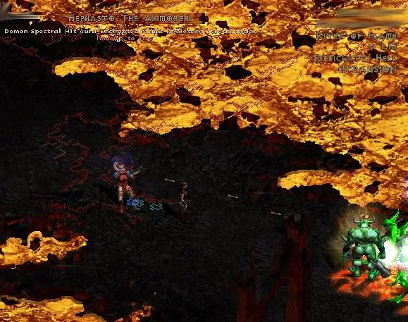
Hephasto spawned with a lovely aura and teleport. He neither dented me or my minions, but he did try to teleport past the Valk, nearly on top of me. I'm glad he wasn't Extra Fast or he might have got in a deadly, if not lethal, hit. Forge rune was a Ko, btw.
The Chaos Sanctuary: Hordes of undead, Megademons and Finger Mages. Despite some noise about her "flawed gear setup" she hosed down any incoming horde with her Cold Burrito.
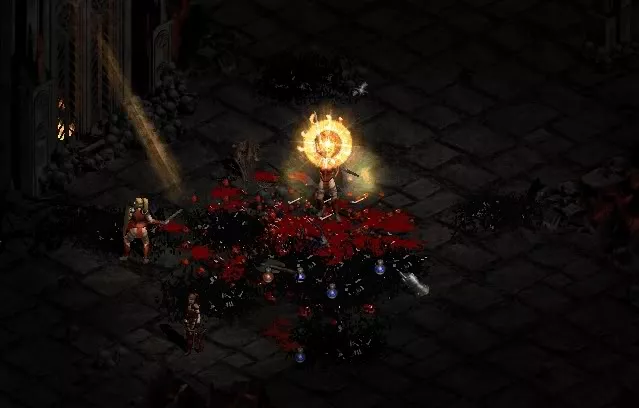
Grand Vizier of Chaos rolled PI FI and other useless mods that didn't matter. My Zon can deal magic, physical and cold damage. My Rogue pumps out physical, Fire and Open Wounds damage. PI monsters slow me down, but they can all be defeated sooner or later. GiantConch showing her inner fury, standing over the Vizier's blood and gibs.
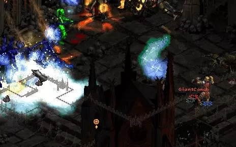
Lord De Seis always has a Fanaticism aura. That alone sets him apart from the other two bosses in the Chaos Sanctum. Fanaticism gives monster extra speed, attack rating and damage. When De Seis comes, you better have a plan. Mainly, "Freeze!" Without his souped up minions, he's a pushover. LDS dropped a nice Crown of Theives for me.
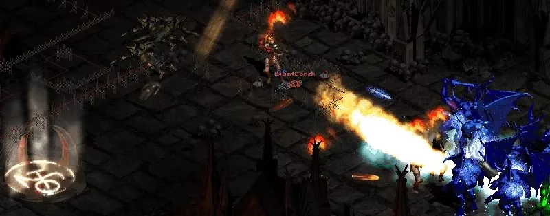
Infector of Souls natively spawned Extra Fast. So, learn what De Seis taught us and slow them down! It looks like he was Cursed, but I never gave him a chance for that to matter.
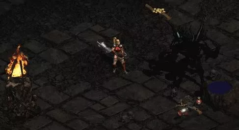
Diablo The big guy. Big D. Prior to the fight, I dropped off my Spirit Monarch and Long Sword, picking up a Teleport staff. You know, just in case he trapped me in a bone prison. Itonya flattened out each time I brought her back, so I just stopped trying to use her 50% Slows Target and just went in with Guided Arrows blazing. Not the easiest boss fight. It almost looks like he was trying to get to that mana pool before I emptied his hit points, sneaky lizard.
Bloody Foothills. Slingers, Vultures and ? I hate Slingers and their piercing attacks. And really, I hate it when the BF spawns with Foul Crows, Thorned Hulks and Burning Archers; Those guys are real monsters. A pair of Waterwalk boots dropped here.
Arreat Plateau rolled Burning Archers, Slingers, Goatmen. Burning Archers betray their positions; a few sprays of Multishot back at 'em works great. And whoever made those doors and towers targettable by minions needs a good talking to. Frustrating.
Crystalline Passage. Witches, Ice Mages, and I don't know. Well, they died.
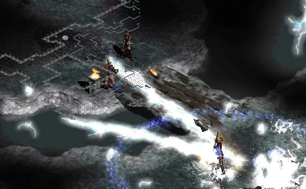
Frozen River. Gloams, Snakes, Dark Lancers! Deadly! Snakes and Lancers can be frozen; they're easy as long as I'm awake. Gloams I was worried about but.. She handles Gloams like a champ.
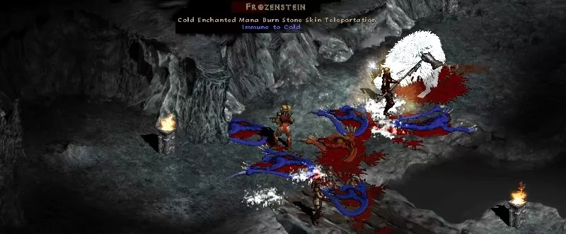
Frozenstein was bled to death by Itonya.
Frozen Tundra wasn't worth mentioning... More towers and doors and catapults for Valkyrie and Itonya to shoot at.
Arreat Summit was hectic and I didn't know how to pull it off. I rolled them until no curses or auras that could hurt me. After spawning my last set, the ones I knew that wouldn't insta-kill me at any point, I ran around. I ran around a lot.
Finally, I realized that I needed to isolate one or two and not try to fight all three at once.
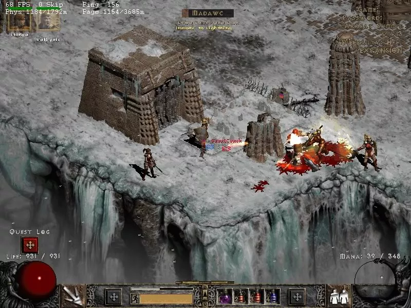
Madawc was the only immediate threat. He didn't care about Valkyrie or Itonya, preferring to just chuck axes at me whenever I switched from my sword/shield setup to the Buriza. I got him into a favorable position and the rest of my team took care of the minor details. ;)
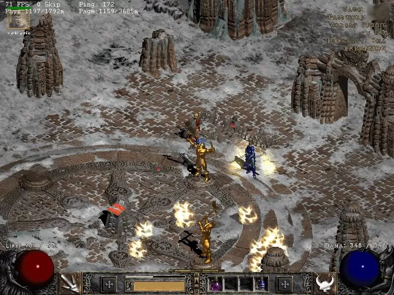
Korlic was guy soooooo annoying. He was also Fire Enchanted, so I wanted no part of his death implosion of doom. I split him away from Talic after Madawc fell. It took lots of running, hitting Weapon switch and firing off Guided Arrow whenever I could. Out of potions, I finished him off.
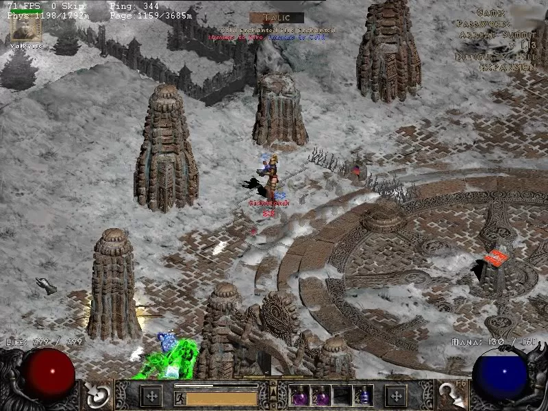
Talic was easy. He tried to tank Valkyrie while Valkyrie tanked him and my arrows made short work from there.
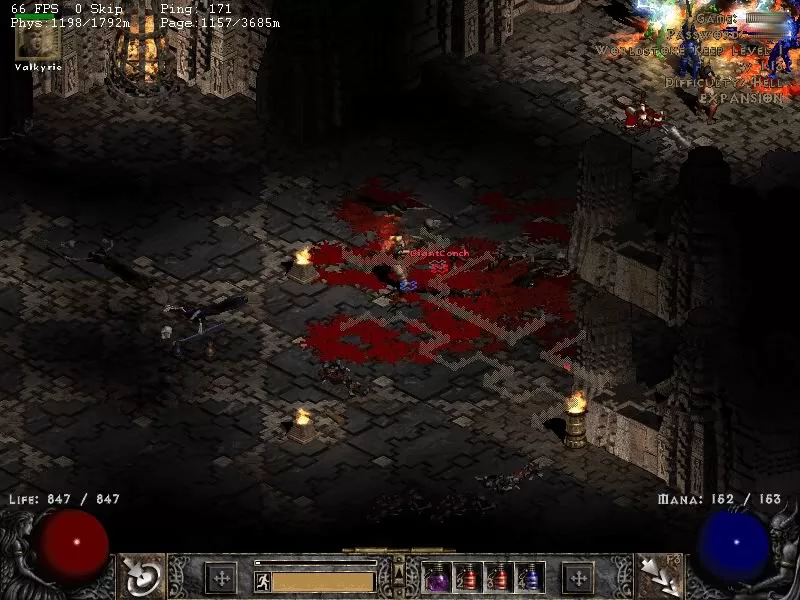
Worldstone Keep 1 Ghould Lords, Sand Raiders, Dark Lancers. I didn't spend a lot of time on this level, but I did stay way offscreen and away from whatever This mob was packin'. Also, that's two Ghould Lord bosses on the floor, I think. Those guys spawned PI too often for me, as you can see by the huge Open Wound puddles.
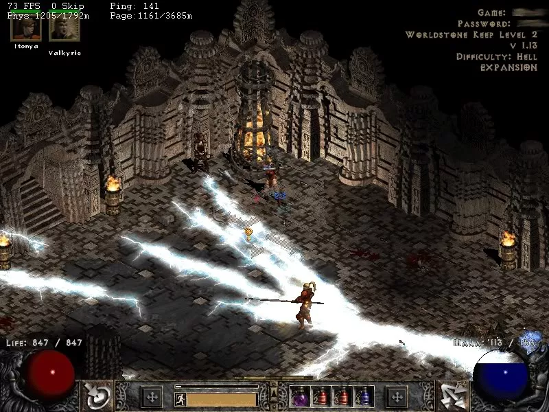
Worldstone Keep 2 Gloams(My favorite!), Snakes and Explodies. Did I mention that there were gloams? ...Because regular gloams aren't scary enough...
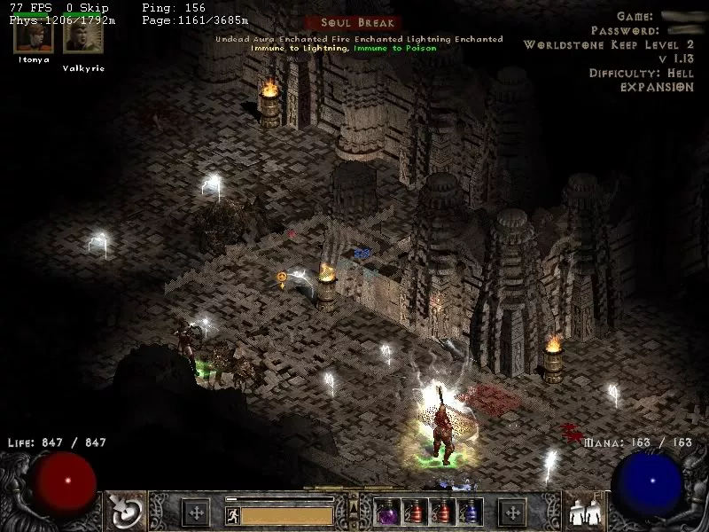
A note on gloam tactics: Decoy. Really, it's your best help. Summon her so that gloams fire perpedicular to your location in relation to the gloams so that the bolts don't just converge on you like what happens to Summon Necromancers. Cast Decoy around corners, gloams will wander into melee so you can shoot them with arrows. Really, I worried about these monsters being a huge threat and that was just never the case here. No Thundercheese-o belt required.
Throne of Destruction
I hopped down the steps with her shield out (75% block, yeah!) and immediately on touching the last step cast Slow Missiles and glanced left and right. To the left, a rather large pack of Doom Nights, maybe some Champions. To the right, Temptresses. Back up the steps and took a fast Town Portal to gather my thoughts.
What if it ended here?
Could a bunch of monsters stop GiantConch?
Of course not!
I switch back to my Spirit Monarch and Spirit Long Sword, boosting her life to 1,000, her passives to level 6 or better. Set "Walk" and clicked the stairs.
The monsters converge and I turn a sharp left, right past the Temptresses. A few clanks and bumps of the shield later, I was around the doom pack and totally safe. And adrenalized. Phew. I wish I had taken a screenshot but I just didn't have the guts to pull my hand away from the potion and escape key area.
Gloams were the third monster here, but I was ready for them. I was ready for them before they even were Gloams.
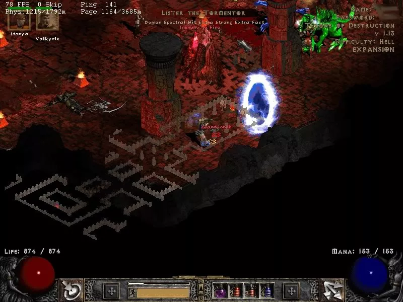
Even Extra Strong Extra Fast Lister couldn't stand in my way this time.
Oh, and Baal?
A few town portals and Itonya resurrections took him out. Really, as long as his clone's not around he's a kitten. Or a really ugly bug. Again, act accordingly.
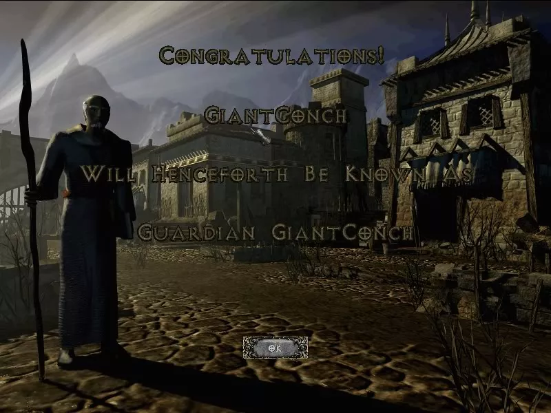
Guardian GiantConch lives on.
Thanks to everyone who was awesome and nice and asked questions and made solid comments in my thread at The Amazon Basin!